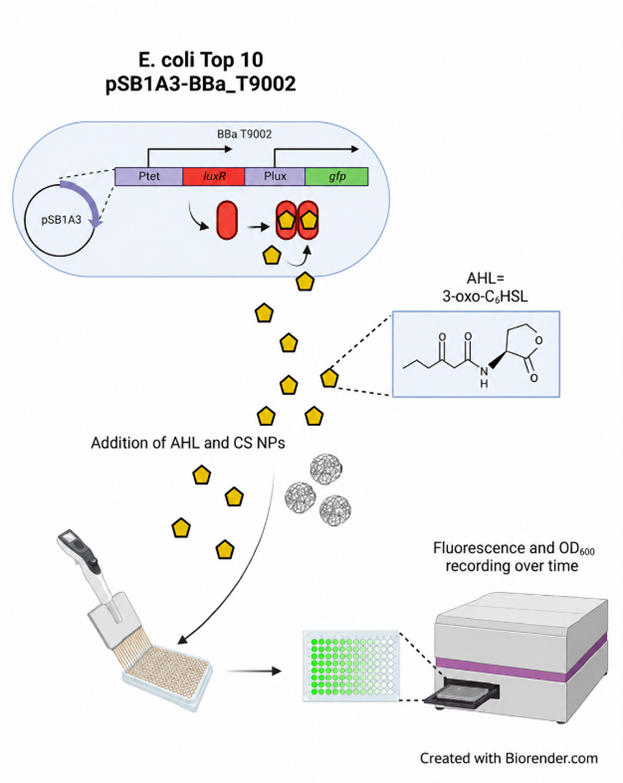
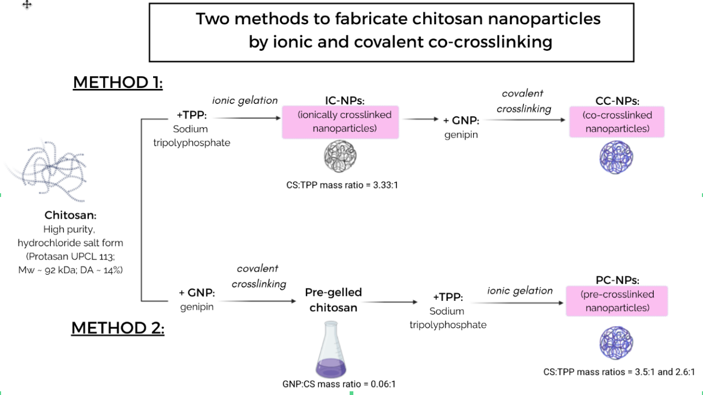
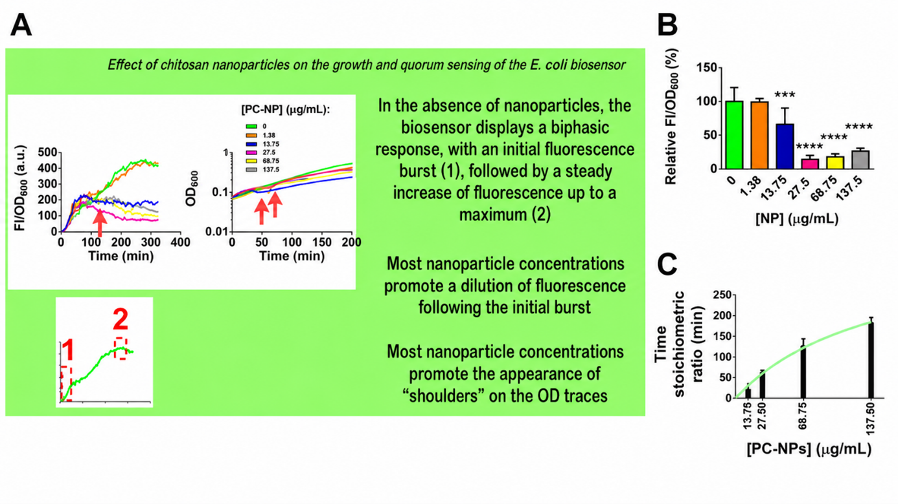

Antón Vila‑Sanjurjo · Associate Professor of Genetics, Universidade da Coruña · Ph.D. in Biology, Brown University (Providence, RI), 2001
Alternatives to classical antibiotics are increasingly explored as strategies to mitigate antimicrobial resistance. Among them, interference with bacterial quorum sensing (QS) has emerged as a particularly promising approach. QS is a cell-to-cell communication system based on the production, release, and detection of small signalling molecules known as autoinducers (AIs). In Gram-negative bacteria, canonical QS pathways rely on acyl-homoserine lactones (AHLs), synthesised by LuxI-type enzymes and sensed by LuxR-type transcriptional regulators.
Through this regulatory architecture, QS coordinates population-level behaviours such as stress adaptation, virulence, and biofilm formation. Rather than targeting bacterial viability directly, QS interference provides a means to attenuate pathogenic phenotypes by disrupting collective bacterial responses.
In the AVS Lab, quorum sensing research has been developed through a long-standing collaboration with Dr. Celina Vila Sanjurjo, Prof. Francisco Goycoolea, and Prof. Carmen Remuñán lópez, integrating efforts in nanotechnology, pharmaceutical sciences, molecular biology, and microbiology.
We develop synthetic bacterial QS biosensors as quantitative platforms to analyse signal processing and to evaluate anti-QS strategies. In particular, we employ an engineered Escherichia coli biosensor carrying a luxI-deficient device derived from the Aliivibrio fischeri system, in which signal detection by LuxR is coupled to fluorescence output.
This framework allows precise control of signal input and enables a quantitative description of emergent behaviour. We have shown that quorum sensing activation can be described using percolation theory, both in vivo and in silico, providing a physically grounded framework to interpret the effects of QS inhibitors.

The production of the violet pigment violacein in Chromobacterium violaceum provides a robust QS-dependent phenotype. Building on classical work using the CV026 mutant strain, we are expanding this system by generating and analysing new QS-impaired mutants derived from the C. violaceum ATCC31532 background.
Our goal is to dissect the regulatory network controlling violacein production and its coupling to cellular physiology. To this end, we integrate growth analysis, scanning electron microscopy, and fluorescent reporters linked to QS-regulated genes.
Ongoing work focuses on proteomic characterisation under QS inducing and non-inducing conditions to identify the molecular pathways linking quorum sensing, aggregation, and biofilm-associated phenotypes.
A central objective of our work is to identify and mechanistically characterise anti-QS strategies. In this context, chitosan-based nanomaterials represent a particularly attractive class of bioinspired modulators.

Chitosans are biocompatible polymers that interact electrostatically with the bacterial envelope. Beyond antimicrobial activity, these interactions can induce cell aggregation and alter spatial organisation within bacterial populations — factors that are increasingly recognised as critical determinants of QS regulation.
Using our biosensor system, we have shown that chitosan nanoparticles (CS NPs) interfere with QS signalling and modulate bacterial growth in a cell-density-dependent manner. These effects are associated with nanoparticle-induced aggregation and appear to depend on a stoichiometric relationship between nanoparticles and bacterial cells.

This suggests that quorum sensing can be modulated not only through molecular interference but also via physicochemical constraints that reshape population structure.
Current work focuses on characterising the subcellular and population-level effects of these nanomaterials in relevant bacterial models, aiming to establish a predictive framework for QS interference based on physical and biological principles.